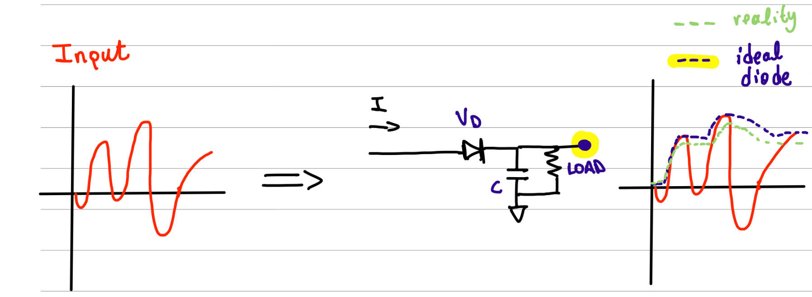
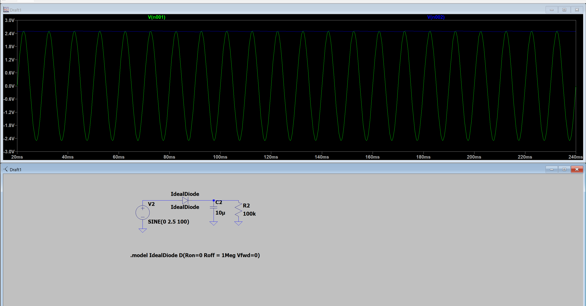
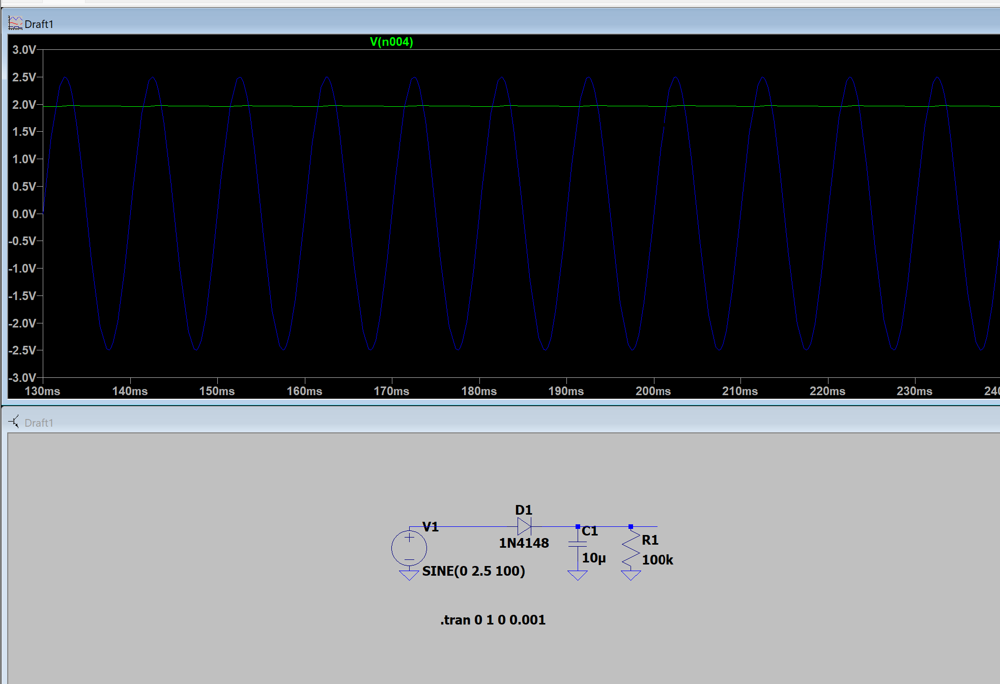

Peak Detector Circuit
Project Overview
Props to professor Sid who I was talking to and told me: this would be a great 112 hacking project! This project makes a circuit that can detect the peak value of an incoming signal. Our goal is to find and output the peak value of an incoming wave, for example a sine wave.
Basic Circuit Design
This can be achieved by wiring a diode and a capacitor in a specific configuration. The capacitor gets charged to the highest value of the incoming wave. When the input signal is rising, the diode conducts, allowing the capacitor to charge up. But once the input starts to drop, the diode becomes reverse biased and blocks the current from flowing back, preventing the capacitor from discharging. Just like that, the capacitor "holds" the peak voltage.

Basic Peak Detector Circuit Configuration
The Diode Problem
However, we encountered an important challenge: diodes have a forward voltage drop (typically ~0.7V for silicon diodes, ~0.3V for Schottky diodes). This means the capacitor won't quite reach the actual peak. In our 5V example, with a silicon diode, the capacitor might only charge up to about 4.3V instead of the full 5V, lowering the amplitude of the output and making our peak detection inaccurate.

Ideal Diode Simulation (Green: input, Blue: output)

Non-Ideal Diode Simulation (Blue: input, Green: output)
The Op-Amp Solution
One solution to this is to use a precision peak detector using an op-amp in combination with the diode: the op-amp compensates for the voltage drop, allowing the capacitor to charge right up to the actual peak.
Op-Amp Working Principle
Op-amps always try to make the voltage difference between the + and − inputs zero (thanks to the high open-loop gain and feedback). When the + input is given a voltage Vin, the op-amp adjusts its output so that the − input matches Vin. Since the − input is tied directly to the output, the output voltage must also be Vin.
Result: Vout = Vin
Final Implementation
The final design includes a buffer, typically an op-amp configured as a voltage follower, added after the peak detector circuit to preserve the stored peak voltage. Since the capacitor in the peak detector holds the peak, directly connecting a load would cause it to discharge and lose accuracy. The buffer prevents this by:
- Presenting a high input impedance (drawing almost no current)
- Providing a low output impedance (safely driving other circuits)
- Effectively isolating the capacitor
- Maintaining the peak voltage for further processing

Final Peak Detector Circuit with Buffer Stage
Testing Results
Using LTSpice for simulation, we tested the circuit with a sine wave of 5Vpp at 100Hz. The results showed accurate peak detection with minimal voltage drop, thanks to the op-amp compensation and buffer stage implementation.